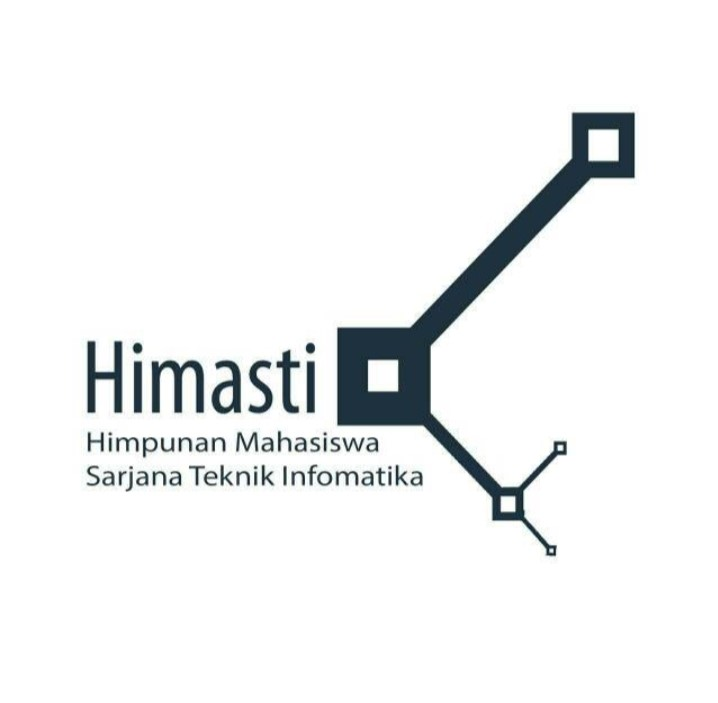
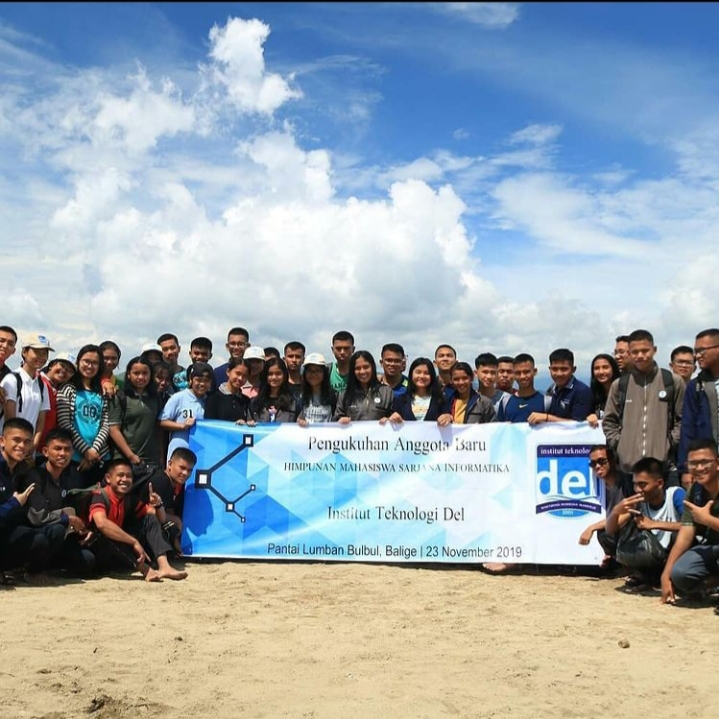

Tentang HIMASTI
HIMASTI(Himpunan Mahasiswa Sarjana Teknik Informatika) merupakan suatu organisasi yang ada di Sarjana Informatika yang
bertujuan untuk pelaksana kegiatan mahasiswa tingkat jurusan, yang berkaitan dengan ilmu, sikap dan program studi jurusan
VISI & MISI
VISI : HIMASTI menjadi wadah kreativitas yang berprestasi dan mengoptimalkan kinerja serta menjunjung tinggi nilai kekeluargaan
MISI :

1. Himpunan sebagai wadah untuk menampung dan menyalurkan aspirasi mahasiswa sarjana informatika
2. Memperdayakan potensi mahasiswa melalui pembinaan dan pengembangan aktif dalam diri mahasiswa
3. Mempererat hubungan kekeluargaan sesama mahasiswa, alumni, serta civitas Institut Teknologi Del
4. Meneruskan dan mengimplementasikan program kerja yang mendukung tercapainya mahasiswa Informatika yang aktif, kreatif, dan inovatif
KEGIATAN
1. Pengukuhan mahasiswa menjadi anggita HIMASTI
2. Pertemuan atau sharing knowledge antar angkatan jurusan Informatika
3. Tutor kepada mahasiswa yang kurang memahami materi dan dilaksanakan oleh divisi pendidikan
4. Pemilihan Ketua, Wakil Ketua dan anggota-anggota yang akan menjalankan organisasi HIMASTI
5. Mengadakan beberapa perlombaan antar mahasiswa seperti coding challange